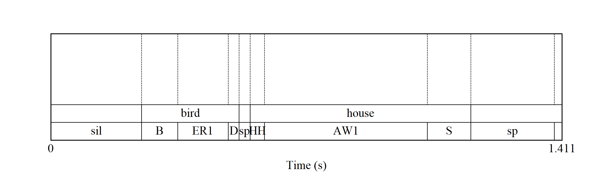
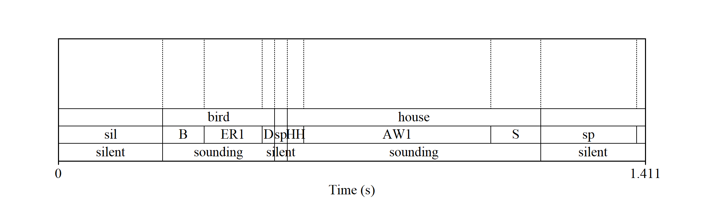

The goal of tjm.praat is to make it easier to run Praat scripts as part of an R workflow. This package provides one main function wrap_praat_script(), plus some scripts designed to work with this function. The name tjm.praat indicates that the package houses my (tjm’s) .praat files.
Installation
You can install tjm.praat from GitHub with:
# install.packages("devtools")
devtools::install_github("tjmahr/tjm.praat")Example of wrapping a Praat script as a function
Let’s make a function that draws a Praat textgrid and saves the image as .png file. First, let’s make the minimal working Praat script, and store it as a string in R. We use glue::glue() because it cleans up the leading and trailing blank lines and the indentations on the string.
script <- glue::glue(
'
form Draw a textgrid
sentence Textgrid_in
integer Width 6
integer Height 4
sentence Png_out
endform
Read from file: textgrid_in$
Select outer viewport: 0, width, 0, height
Draw: 0, 0, "yes", "yes", "yes"
Save as 300-dpi PNG file: png_out$
'
)Now, we can convert this script into an R function. We tell wrap_praat_script() to return the last argument of the script (png_out$ in this example) back to R after the script runs.
library(tjm.praat)
# Find where Praat lives on my machine
praat_location <- Sys.which("praat")
f_draw_textgrid <- wrap_praat_script(
praat_location = praat_location,
script_code_to_run = script,
return = "last-argument"
)Now we set up the file arguments to script. First, we need a textgrid file. Let’s use a textgrid bundled with the package. The textgrid shows the results of a forced-alignment on the phrase “bird house”.
tg_in <- system.file(
"demo-textgrids/birdhouse.TextGrid",
package = "tjm.praat"
)We also need a place to save the image. I’m going to use a temporary file.
png_out <- tempfile("birdhouse", fileext = ".png")Shoot. I just forgot what the arguments are to this script. That’s okay, we can print the function to view the form.
f_draw_textgrid
#> # <wrapped_praat_script>
#> # <returning: last-argument>
#> form Draw a textgrid
#> sentence Textgrid_in
#> integer Width 6
#> integer Height 4
#> sentence Png_out
#> endform
#> # ... with 6 more lines
print(f_draw_textgrid, condense = FALSE)
#> # <wrapped_praat_script>
#> # <returning: last-argument>
#> form Draw a textgrid
#> sentence Textgrid_in
#> integer Width 6
#> integer Height 4
#> sentence Png_out
#> endform
#>
#> Read from file: textgrid_in$
#> Select outer viewport: 0, width, 0, height
#>
#> Draw: 0, 0, "yes", "yes", "yes"
#> Save as 300-dpi PNG file: png_out$Oh that’s right. Width then height. Now, let’s call the function and view the resulting image.
result <- f_draw_textgrid(tg_in, 7, 2, png_out)
magick::image_read(result) 
Example using bundled Praat scripts
I have bundled some Praat scripts with this package. They are very minimal and written under the assumption that the scripts would only ever called via a Praat script.
In one of my projects, I needed to extract the silences identified by a forced alignment algorithm. Thus, I needed to do three things for each textgrid:
- Copy the tier with speech-sound intervals.
- Convert the speech-sound labels into “silence” and “sounding”.
- Merged adjacent “silence” intervals and “sounding” intervals together.
So I wrote a script for each of these steps. The last-argument of each script is a Praat textgrid, so I can pipe these wrapped-script functions into each other.
f_duplicate <- wrap_praat_script(praat_location, duplicate_tier)
f_relabel <- wrap_praat_script(praat_location, convert_tier_to_silences)
f_merge <- wrap_praat_script(praat_location, merge_duplicate_intervals)Let’s apply these scripts to our original example textgrid.
tg_out <- tempfile("demo", fileext = ".TextGrid")
png_out <- tempfile("demo", fileext = ".png")
tg_result <- tg_in |>
f_duplicate("phones", "pauses", "last", tg_out) |>
f_relabel("pauses", "^$|sil|sp", tg_out) |>
f_merge("pauses", tg_out)
png_result <- f_draw_textgrid(tg_result, 7, 2, png_out)
magick::image_read(png_result)
Now, with a little purrr magic, we could run this workflow on thousands of textgrids 😉.
Finally, as a little test, I want to make sure the package works when spaces appear in the file names.
tg_out <- tempfile("demo with spaces in name", fileext = ".TextGrid")
png_out <- tempfile("demo with spaces in name", fileext = ".png")
tg_result <- tg_in |>
f_duplicate("phones", "pauses", "last", tg_out) |>
f_relabel("pauses", "^$|sil|sp", tg_out) |>
f_merge("pauses", tg_out)
png_result <- f_draw_textgrid(tg_result, 3.5, 2, png_out)
png_result
#> [1] "C:\\Users\\Tristan\\AppData\\Local\\Temp\\RtmpWgF5OH\\demo with spaces in name3f8d5b7c27.png"